Contents
- Forward stochastic reachability using Fourier transforms
- Problem formulation: Spacecraft motion via CWH dynamics
- Dynamics model for the deputy relative to the chief spacecraft
- System definition
- P1. Probability that the deputy rendezvous with the chief at some time 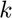?
- P2. Probability that the deputy (safely) rendezvous with the chief?
Forward stochastic reachability using Fourier transforms
This example will demonstrate the use of SReachTools in forward stochastic reachability analysis for stochastic continuous-state discrete-time linear time-invariant (LTI) systems. This example script is part of the SReachTools toolbox, which is licensed under GPL v3 or (at your option) any later version. A copy of this license is given in https://sreachtools.github.io/license/.
Specifically, we will discuss how SReachFwd uses Fourier transforms to efficiently compute
- Forward stochastic reach probability density: The probability density function associated with the random vector describing the state at a future time of interest.
- Probability computations: Probability that the state lies in a target set or the trajectory in a target tube at a future time of interest.
While the theoretical results apply for arbitrary distributions, SReachTools currently permit only Gaussian-perturbed LTI systems. In this case, our approach coincides with Kalman filter updates, and it is grid-free and recursion-free. We will consider the case where the initial state is a known deterministic point in the state space, and the case where the initial state is a random vector.
% Prescript running: Initializing srtinit, if it already hasn't been initialized close all;clearvars;srtinit;
Problem formulation: Spacecraft motion via CWH dynamics
We consider both the spacecrafts, referred to as the deputy spacecraft and the chief spacecraft, to be in the same circular orbit. In this example, we will consider the forward stochastic reachability analysis of the deputy.

Dynamics model for the deputy relative to the chief spacecraft
The relative planar dynamics of the deputy with respect to the chief are described by the Clohessy-Wiltshire-Hill (CWH) equations,
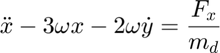

where the position of the deputy relative to the chief is 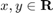,  is the orbital frequency,
is the orbital frequency,  is the gravitational constant, and 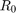 is the orbital radius of the chief spacecraft. We define the state as
is the gravitational constant, and 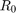 is the orbital radius of the chief spacecraft. We define the state as ![$\overline{x} = {[x\ y\ \dot{x}\ \dot{y}]}^\top \in \mathbf{R}^{4}$](cwhSReachFwd_eq10872751811371042055.png) which is the position and velocity of the deputy relative to the chief along
which is the position and velocity of the deputy relative to the chief along  - and 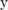- axes, and the input as 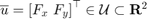.
- and 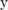- axes, and the input as 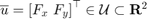.
We will discretize the CWH dynamics in time, via zero-order hold, to obtain the discrete-time linear time-invariant system and add a Gaussian disturbance to account for the modeling uncertainties and the disturbance forces,
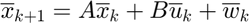
with  as an IID Gaussian zero-mean random process with a known covariance matrix 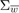.
as an IID Gaussian zero-mean random process with a known covariance matrix 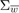.
SReachTools directly allows us to create a LtiSystem object with these dynamics. We will set the input space to be unbounded.
System definition
umax = Inf; mean_disturbance = zeros(4,1); covariance_disturbance = diag([1e-4, 1e-4, 5e-8, 5e-8]); % Define the CWH (planar) dynamics of the deputy spacecraft relative to the % chief spacecraft as a LtiSystem object sys_CWH = getCwhLtiSystem(4, Polyhedron('lb', -umax*ones(2,1), ... 'ub', umax*ones(2,1)), ... RandomVector('Gaussian', mean_disturbance,covariance_disturbance));
Next, we close the control loop under the action of a linear feedback law (LQR) We will define a LtiSystem object to describe the dynamics when 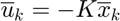 for some 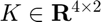. We will compute 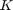 using LQR theory with  and
and  , i.e., will regulate the deputy spacecraft towards the origin.
, i.e., will regulate the deputy spacecraft towards the origin.
% Create a discrete-time LQR controller that regulates the deputy to the origin K = lqr(ss(sys_CWH.state_mat,sys_CWH.input_mat,[],[],-1),0.01*eye(4),eye(2)); % Reuse the system definition in sys_CWH with appropriately defined state matrix closed_loop_state_mat = sys_CWH.state_mat - sys_CWH.input_mat*K; sys = LtiSystem('StateMatrix', closed_loop_state_mat, ... 'DisturbanceMatrix', sys_CWH.dist_mat, ... 'Disturbance', sys_CWH.dist); disp(sys);
Linear time invariant system with 4 states, 0 inputs, and 4 disturbances.
P1. Probability that the deputy rendezvous with the chief at some time ?
Since the chief is located at the origin in this coordinate frame (sys describes the relative dynamics of the deputy), we define the target set to be a small box centered at the origin (target_set is a box axis-aligned with side 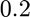). We are interested in the probability that the deputy will meet the chief at target_time time steps in future.
% Time of interest target_time = 23; % Target set definition target_set = Polyhedron('lb',-0.05 * ones(4,1), ... 'ub', 0.05 * ones(4,1)); desired_accuracy = 1e-2; % Problem 1a: Fixed initial state % ------------------------------- % Initial state definition initial_state = [-10;10;0;0];
% 1. Compute the mean and the covariance of the forward stochastic reach % probability density of the state at time |target_time starting from this fixed % initial state.| x_target_time_rv = SReachFwd('state-stoch', sys, initial_state, target_time); mean_x = x_target_time_rv.mean(); cov_x = x_target_time_rv.cov(); disp(mean_x); disp(cov_x);
-0.0056
0.0229
-0.0001
0.0003
1.0e-03 *
0.4935 -0.0000 -0.0026 -0.0003
-0.0000 0.4937 0.0003 -0.0026
-0.0026 0.0003 0.0001 0.0000
-0.0003 -0.0026 0.0000 0.0001
% 2. Compute the probability of reaching a target set at a specified target % time % Integrate the FSRPD at time target_time over the target_set prob = SReachFwd('state-prob', sys, initial_state, target_time, target_set, ... desired_accuracy); fprintf('Probability of x_{target_time} lying in target_set: %1.4f\n',prob);
Probability of x_{target_time} lying in target_set: 0.8600
% 3. Validate this probability via Monte-Carlo simulations n_mcarlo_sims = 1e5; % This function returns the concatenated state vector stacked columnwise concat_state_realization = generateMonteCarloSims(... n_mcarlo_sims, ... sys, ... initial_state, ... target_time); % Extract the location of the deputy at target_time end_locations = concat_state_realization(end-sys.state_dim +1 : end,:); % Check if the location is within the target_set or not mcarlo_result = target_set.contains(end_locations); fprintf('Monte-Carlo simulation using %1.0e particles: %1.3f\n', ... n_mcarlo_sims, ... sum(mcarlo_result)/n_mcarlo_sims);
Monte-Carlo simulation using 1e+05 particles: 0.862
% Problem 1b: Initial state is a Gaussian random vector % ------------------------------------------------------ % Initial state definition initial_state_rv = RandomVector('Gaussian', initial_state, 0.1*eye(4));
% 1. Compute the mean and the covariance of the forward stochastic reach % probability density of the state at time |target_time when the initial state % is stochastic.| x_target_time_rv = SReachFwd('state-stoch', sys, initial_state_rv, target_time); mean_x = x_target_time_rv.mean(); cov_x = x_target_time_rv.cov(); disp(mean_x); disp(cov_x);
-0.0056
0.0229
-0.0001
0.0003
1.0e-03 *
0.9818 -0.0100 -0.0263 -0.0007
-0.0100 0.9350 0.0010 -0.0254
-0.0263 0.0010 0.0013 0.0000
-0.0007 -0.0254 0.0000 0.0013
% 2. Compute the probability of reaching a target set at a specified target % time % Integrate the FSRPD at time target_time over the target_set prob = SReachFwd('state-prob', sys, initial_state_rv, target_time, ... target_set, desired_accuracy); fprintf('Probability of x_{target_time} lying in target_set: %1.4f\n',prob);
Probability of x_{target_time} lying in target_set: 0.7100
Notice how the probability of success is lower due to a random initial state.
% 3. Validate this reach probability via Monte-Carlo simulations n_mcarlo_sims = 1e5; % This function returns the concatenated state vector stacked columnwise concat_state_realization = generateMonteCarloSims(... n_mcarlo_sims, ... sys, ... initial_state_rv, ... target_time); % Extract the location of the deputy at target_time end_locations = concat_state_realization(end-sys.state_dim +1 : end,:); % Check if the location is within the target_set or not mcarlo_result = target_set.contains(end_locations); fprintf('Monte-Carlo simulation using %1.0e particles: %1.3f\n', ... n_mcarlo_sims, ... sum(mcarlo_result)/n_mcarlo_sims);
Monte-Carlo simulation using 1e+05 particles: 0.710
P2. Probability that the deputy (safely) rendezvous with the chief?
Since the chief is located at the origin in this coordinate frame (sys describes the relative dynamics of the deputy), we define the target set to be a small box centered at the origin (target_set is a box axis-aligned with side ). We are interested in the probability that the deputy will meet the chief at target_time time steps in future. Additionally, we desire that the deputy satellite stays within a line-of-sight cone for accurate sensing.
target_time = 10; % Time of interest target_set = Polyhedron('lb',-0.05 * ones(4,1), ... 'ub', 0.05 * ones(4,1)); % Target set definition % Create a target tube % Safe set definition % LoS cone |x|<=y and y\in[0,ymax] and |vx|<=vxmax and |vy|<=vymax % ------------------------------------------------------------------------------ ymax = 10; vxmax = 0.5; vymax = 0.5; A_safe_set = [1, 1, 0, 0; -1, 1, 0, 0; 0, -1, 0, 0; 0, 0, 1,0; 0, 0,-1,0; 0, 0, 0,1; 0, 0, 0,-1]; b_safe_set = [0; 0; ymax; vxmax; vxmax; vymax; vymax]; safe_set = Polyhedron(A_safe_set, b_safe_set); safety_tube = Tube('reach-avoid', safe_set, target_set, target_time);
% Problem 2a: Fixed initial state % ------------------------------- % % Initial state definition initial_state = [0; -1; 0; 0]; % 1. Compute the mean and the covariance of the forward stochastic reach % probability density of the state at time |target_time starting from this fixed % initial state.| X_target_time_rv = SReachFwd('concat-stoch', sys, initial_state, target_time); mean_X = X_target_time_rv.mean(); mean_X_trajectory = reshape(mean_X,4,[]); disp(mean_X_trajectory);
Columns 1 through 7
0 -0.0034 -0.0098 -0.0145 -0.0159 -0.0142 -0.0102
-1.0000 -0.9486 -0.8201 -0.6587 -0.4943 -0.3451 -0.2204
0 -0.0003 -0.0003 -0.0002 0.0000 0.0002 0.0002
0 0.0051 0.0077 0.0084 0.0080 0.0069 0.0056
Columns 8 through 11
-0.0051 0.0001 0.0046 0.0079
-0.1232 -0.0526 -0.0051 0.0237
0.0003 0.0002 0.0002 0.0001
0.0042 0.0029 0.0018 0.0010
% 2. Compute the probability of reaching a target set at a specified target % time *while staying within a safe set* % Integrate the FSRPD at time target_time over the target_set prob = SReachFwd('concat-prob', sys, initial_state, target_time, ... safety_tube, desired_accuracy); fprintf(['Probability of x_{target_time} lying in target_set while ', ... 'staying inside line-of-sight cone: %1.4f\n'],prob);
Probability of x_{target_time} lying in target_set while staying inside line-of-sight cone: 0.3100
% 3. Validate this reach probability via Monte-Carlo simulations n_mcarlo_sims = 1e5; % This function returns the concatenated state vector stacked columnwise concat_state_realization = generateMonteCarloSims(... n_mcarlo_sims, ... sys, ... initial_state, ... target_time); % Check if the location is within the target_set or not mcarlo_result = safety_tube.contains(concat_state_realization); prob_mc_estim = sum(mcarlo_result)/n_mcarlo_sims; fprintf('Monte-Carlo simulation using %1.0e particles: %1.3f\n', ... n_mcarlo_sims, ... sum(mcarlo_result)/n_mcarlo_sims);
Monte-Carlo simulation using 1e+05 particles: 0.311
% Problem 2b: Initial state is a Gaussian random vector % ----------------------------------------------------- initial_state_rv = RandomVector('Gaussian', ... initial_state, ... 0.001*eye(4)); % Initial state definition % 1. Compute the mean and the covariance of the forward stochastic reach % probability density of the state at time |target_time starting from this fixed % initial state.| X_target_time_rv = SReachFwd('concat-stoch', sys, initial_state_rv, target_time); mean_X = X_target_time_rv.mean(); cov_X = X_target_time_rv.cov(); mean_X_trajectory = reshape(mean_X,4,[]); disp(mean_X_trajectory);
Warning: Sanitized covariance matrix since negative eigenvalues > -2*eps and <0
found!
New covariance matrix has all the eigenvalues below 1e-10 set to 0.
Columns 1 through 7
0 -0.0034 -0.0098 -0.0145 -0.0159 -0.0142 -0.0102
-1.0000 -0.9486 -0.8201 -0.6587 -0.4943 -0.3451 -0.2204
0 -0.0003 -0.0003 -0.0002 0.0000 0.0002 0.0002
0 0.0051 0.0077 0.0084 0.0080 0.0069 0.0056
Columns 8 through 11
-0.0051 0.0001 0.0046 0.0079
-0.1232 -0.0526 -0.0051 0.0237
0.0003 0.0002 0.0002 0.0001
0.0042 0.0029 0.0018 0.0010
Note that the mean remains the same as Problem 2a.
% 2. Compute the probability of reaching a target set at a specified target % time *while staying within a safe set* prob = SReachFwd('concat-prob', sys, initial_state_rv, target_time, ... safety_tube, desired_accuracy); fprintf(['Probability of x_{target_time} lying in target_set while ', ... 'staying inside line-of-sight cone: %1.4f\n'], prob);
Warning: Sanitized covariance matrix since negative eigenvalues > -2*eps and <0
found!
New covariance matrix has all the eigenvalues below 1e-10 set to 0.
Probability of x_{target_time} lying in target_set while staying inside line-of-sight cone: 0.0700
% However, the probability decreases drastically since the initial state % is now random. % 3. Validate this reach probability via Monte-Carlo simulations n_mcarlo_sims = 1e5; % This function returns the concatenated state vector stacked columnwise concat_state_realization = generateMonteCarloSims(... n_mcarlo_sims, ... sys, ... initial_state_rv, ... target_time); % Check if the location is within the target_set or not mcarlo_result = safety_tube.contains(concat_state_realization); fprintf('Monte-Carlo simulation using %1.0e particles: %1.3f\n', ... n_mcarlo_sims, ... sum(mcarlo_result)/n_mcarlo_sims);
Monte-Carlo simulation using 1e+05 particles: 0.067